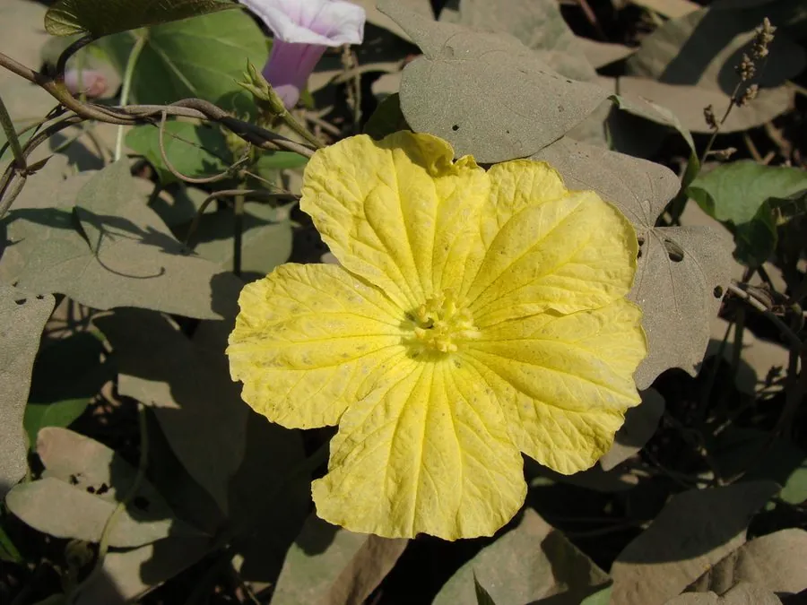

农作物与经济植物 · 植物界
丝瓜 Luffa cylindrica

丝瓜的嫩果可炒食、煮汤，成熟后纤维化可作丝瓜络，用于洗碗、搓澡和入药，是用途广泛的瓜类作物。
- 分类
- 门被子植物门纲双子叶植物纲目葫芦目科葫芦科属丝瓜属
- 栖息环境
- 高温湿润的菜地，喜光照充足、保水力强土壤
- 地理分布
- 原产热带亚洲，现中国、印度、东南亚等地广泛栽培
- 保护级别
- 暂无评估（栽培作物）
物种志
丝瓜是一年生攀援草本，茎蔓生、有棱和卷须，分枝多。叶片掌状分裂，边缘有齿。花单性同株，黄色，五瓣。果实为瓠果，长圆柱形，嫩时绿色、肉质，表面有纵纹或棱；成熟后内部纤维化，形成网状纤维束，即“丝瓜络”。
丝瓜原产热带亚洲，中国栽培历史悠久，南北方均有种植。它喜高温湿润、光照充足，不耐寒，适宜在疏松肥沃、保水力强的土壤中种植，多搭架栽培。嫩果可炒食、煮汤，口感滑嫩，是夏季常见蔬菜；成熟果实内部的纤维束即丝瓜络，可用于洗碗、搓澡，也可入药，有通络、清热之效。丝瓜富含水分、维生素 C，是夏季消暑的好食材。
形态与习性
- 果实长圆柱形，嫩时肉质
- 成熟内部纤维化成丝瓜络
- 花黄色，雌雄同株
- 用途炒食、煮汤，丝瓜络用于洗涤
- 药用丝瓜络通络清热
趣味知识
- 丝瓜成熟后内部会变成网状纤维，就是洗碗用的丝瓜络。
- 丝瓜络不仅能洗碗，还能入药，有通络清热之效。
- 丝瓜嫩果口感滑嫩，是夏季常见的家常蔬菜。